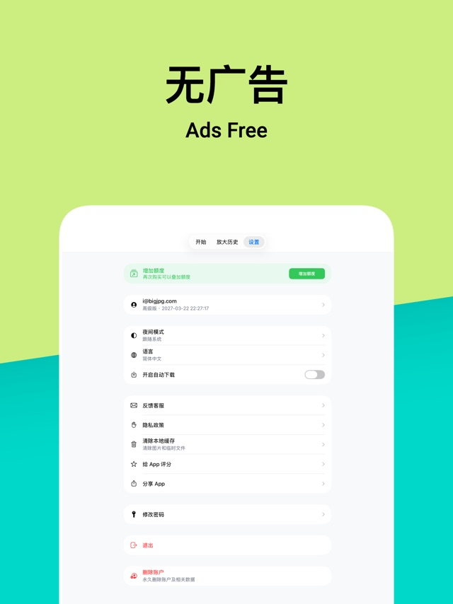
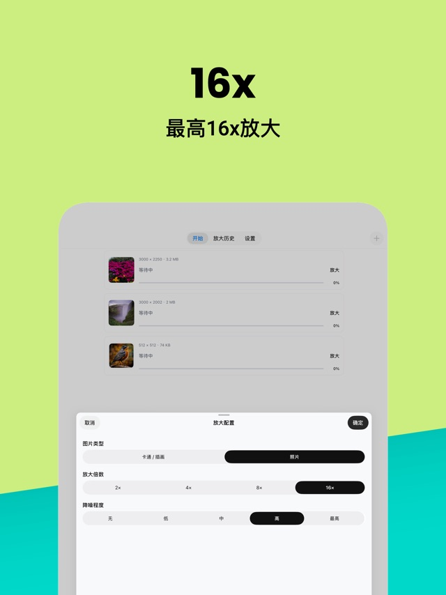

用了一年的 Bigjpg：从免费 20 张到付费套餐，哪些是真离不开的
装 Bigjpg 到现在快一年了，从最初每月 20 张免费额度抠着用，到后来实在不够升了基础套餐。这篇不说参数怎么调、不说效果对比图——只讲这一年里哪些地方越用越顺手、哪些坑是用久了才注意到的，以及我对「要不要续费」的真实想法。
装它那天我没想过会用到付费
去年冬天一个朋友甩过来一张分辨率极低的老照片，说帮忙放大一下。我翻了一圈在线工具，Bigjpg 的结果最干净——没有那种一放大就糊成马赛克或者冒出 AI 假细节的感觉。当时想着反正免费版每月 20 张，偶尔用用足够了，随手注册了个账号就搁那儿了。
真正开始高频用是今年春天。工作里偶尔需要把产品图放大做展板，朋友圈发图又总想让细节更清楚，20 张的额度很快撑不住了。纠结了两个月，还是掏了钱升了基础套餐——那是我第一次为这种工具类服务付费，心里其实没抱太高期待。
越用越顺手的几个地方
上传体验是真省心。 网页端拖进去就自动弹出配置面板，不用跳来跳去。我试过同类工具，有的要先选放大模式再上传图，有的配置选项藏得深，第一次用容易懵。bigjpg官网这一块做得特别"直给"——图片到位、参数到位、点确定就开始跑，没有多余的步骤。
历史记录自动存。 这点我后来才发现是刚需。上个月找一张三个月前放大的图，翻历史页一下就找到了，直接下载不用重新上传。要是搁以前用的那些游客模式工具，关了浏览器结果就没了，得重新跑一遍。现在每次看到历史页里攒的那几十条记录，反倒有一种"这个工具在替我记东西"的踏实感。
App 端让我改掉了"必须在电脑前才能放大"的习惯。 当初从bigjpg下载拿到安装包的时候没想过会用得这么勤。上周出去拍了点东西，回来想把一张细节糊的照片放大看清楚，掏出手机在 App 上点了就不管了，等地铁的时候通知弹出来说好了，直接在手机上下载。这种"提交后不用盯着"的体验，是网页端比不了的——免费版没登录的时候关浏览器任务会丢，付费后彻底不用操心这个了。

用久了才注意到的烦心事
免费版的排队是真能让人等到火大。 刚开始用免费的时候，下午四五点提交一张图，预估时间写"4 分钟"，实际跑了快半小时。我一开始以为是自己的图有问题，后来才知道免费版用的是共享服务器，高峰期排队时间直接翻倍都不止。升了付费后就快多了，但第一次掏钱前那段等待的经历，现在想起来都有点忍俊不禁——那时候还傻等在浏览器前刷新进度条呢。
付款环节的小坑踩过一次。 去年年底续费的时候，网页端四个套餐卡片排版太像了，我本来想续基础档，结果点成了标准档，多花了一倍的钱。后来找客服倒是给退了差价，但那次之后每次付款前我都要盯着档位名称再确认一遍——￥35 / ￥69 / ￥138 三个档位的卡片长得确实太容易混淆。
批量功能解锁后才发现自己其实不怎么需要。 当初付费的一个重要理由是想批量处理一组产品图，结果真用起来发现——我每次需要放大的图也就两三张，最多四五张，单次批量提交完全够用，没有一次用到过真正意义上的"整批"。这让我对自己当初的付费理由有点哭笑不得：我为一个其实用不上的功能多花了钱。
说个反直觉的：参数我反而越调越简单了
刚开始接触 Bigjpg 时我总爱折腾参数——卡通模式、降噪开低、放大 4 倍，每张图都要反复试两三次，后来去翻bigjpg文档才知道好多参数其实没必要调那么细。现在呢？大部分图直接用默认配置，最多把降噪从"无"改成"低"。原因很简单：折腾出来的效果和默认配置差不了多少，但省下来的时间是实实在在的。
这可能是所有工具类产品都会经历的一个阶段：新鲜感过去之后，你会发现"够用"比"完美"更重要。Bigjpg 的默认参数对 90% 的日常场景已经够好了，剩下那 10% 真正需要精细调参的图，手动跑一遍也不费事。
当初那些判断，时间给了修正
免费 20 张"够用"——我高估了自己的节制。 注册账号的时候真的觉得一个月 20 张绰绰有余，毕竟不是天天要放大图。结果春天那阵工作忙起来，一周就能用掉七八张，月底那段时间真的要抠着用。这是我对自己使用频率最乐观的一次误判。
付费 = 永久受益——我低估了"排队"这个变量。 升了付费后服务器确实快很多，但也不是完全不用等。上个月有天同时提交了三张图，最大的那张还是排了快十分钟。付费买到的是"优先通道"不是"专属通道"，这点我当初想简单了。
会不会续费
目前还在续费。理由不是"离不开"——我真停下来两周，那些没放大的图也就搁那儿了，工作生活不会受影响。真正让我留下来的原因是：它的网页端和 App 端都没出过什么 bug，历史记录一直稳稳的，付款也没出过二次扣费这种糟心事。对一个工具来说，"安静地好用"其实已经是很高的评价了。

什么时候该换？大概就是某天我发现自己打开它的频率降到了一个月一两次以下——那时候免费额度肯定够了，或者有更合适的工具冒出来。但在那之前，它继续在我手机里占着那点位置挺好的。
最后说句实在的：Bigjpg 不是那种让人惊艳的工具，它的效果也不是行业里最好的。但它的流程够顺、够稳、够不折腾。对我们这些普通用户来说，"够用 + 不添乱"比任何参数和功能列表都重要——上面这些踩坑心得，我顺手也整理成了一份资料，GitHub、Gitee、GitCode 都能拿到同一份。